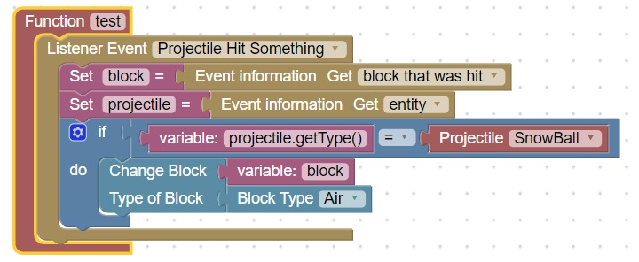

Snowball Effect
When a snowball hits a snow_block, the snow block should be deleted (changed to air)

To test this effect:
- Open blockly-scriptcraft
- Delete any blocks if there are some
- Select a function block from Scriptcraft Coding and drag it over
- Name the function block: test
- Place the above code in the function block
- Use Search for Block feature to find missing blocks
- Download test.js to your MinecraftServer/scriptcraft/plugins directory
- Run the server by executing runServer.bat located in the spigotMC directory
- Open the server console and type: reload
- Run the function with the console command: js test()
- Open minecraft, muliplayer and connect to server: localhost
- Give yourself snowballs with the server command: give @a snowball 16
- Give yourself snowblocks with the server comman: give @a snowblock 16
- Lay some snowblocks down
- Throw a snowball at the snowblock, the snowblock should turn to air